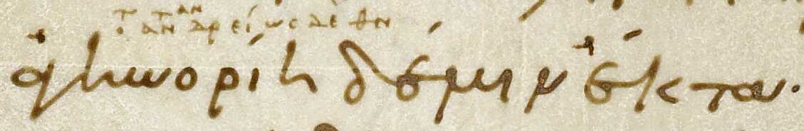
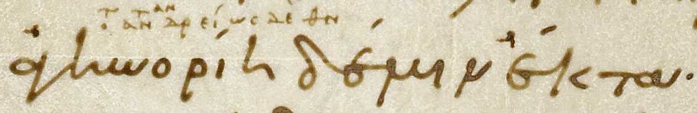
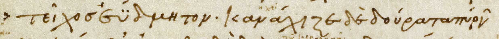
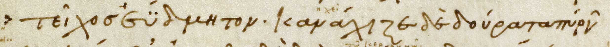
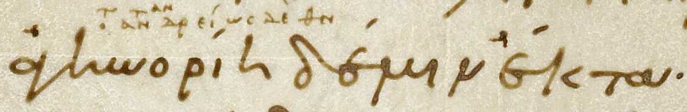
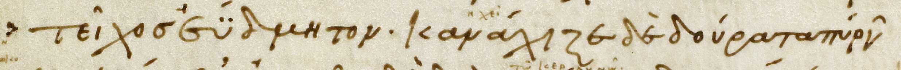

9.673 | μ᾽ | μοι |
9.673 | μ᾽ | μοι |  9.675 | ἔτ᾽ | ἔτι|  10.154 | λάμφ | λάμπε |
9.675 | ἔτ᾽ | ἔτι|  10.154 | λάμφ | λάμπε |  10.289 | κεῖσ᾽ | κεῖσε |
10.289 | κεῖσ᾽ | κεῖσε |  10.378 | ζωγρεῖτ᾽ | ζωγρεῖτε |
10.378 | ζωγρεῖτ᾽ | ζωγρεῖτε |  10.520 | ὄθ᾽ | ὄτι |  10.529 | χείρεσσ᾽ | χείρεσσι[ElisionText8] |
10.520 | ὄθ᾽ | ὄτι |  10.529 | χείρεσσ᾽ | χείρεσσι[ElisionText8] |Line Reference (Book.Line) | Main Text | Scholion Correction | As Shown on Folio --- | --- | --- | --- 3.425 | ἀντί᾽ | ἀντία | 9.673 | μ᾽ | μοι | 9.675 | ἔτ᾽ | ἔτι|  10.154 | λάμφ | λάμπε | 10.289 | κεῖσ᾽ | κεῖσε | 10.378 | ζωγρεῖτ᾽ | ζωγρεῖτε | 10.520 | ὄθ᾽ | ὄτι |  10.529 | χείρεσσ᾽ | χείρεσσι[ElisionText8] |